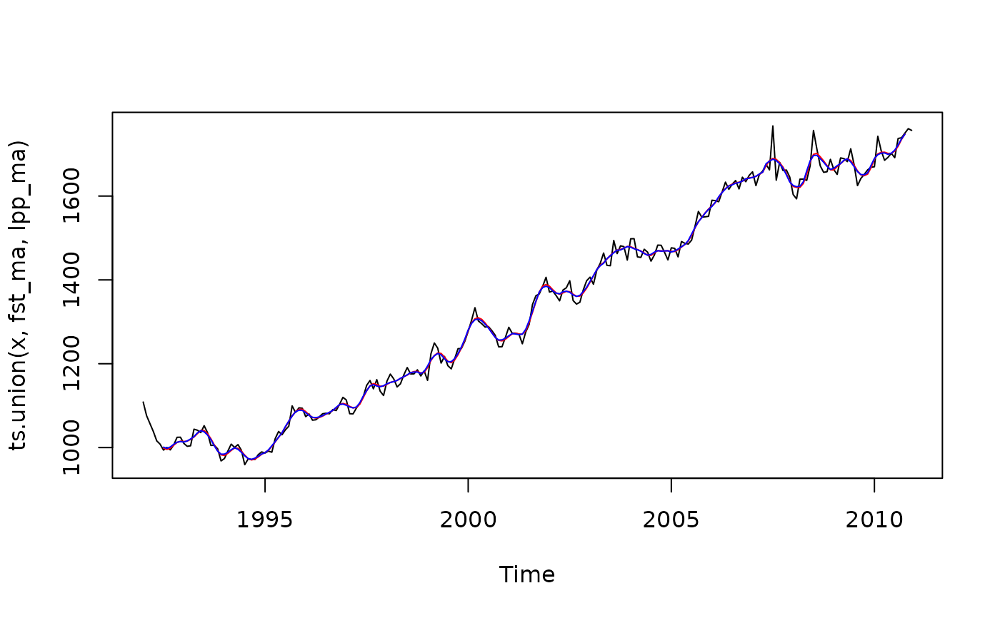

Applies linear filtering to a univariate time series or to each series separately of a multivariate time series using either a moving average (symmetric or asymmetric) or a combination of symmetric moving average at the center and asymmetric moving averages at the bounds.
Details
The functions filter extends filter allowing to apply every kind of moving averages
(symmetric and asymmetric filters) or to apply aset multiple moving averages
to deal with the boundaries.
Let \(x_t\) be the input time series to filter.
If
coefis an objectmoving_average(), of length \(q\), the result \(y\) is equal at time \(t\) to: $$y[t] = x[t-lags] * coef[1] + x[t-lags+1] * coef[1] + ... + x[t-lags+q] * coef[q]$$. It extends the functionfilterthat would addNAat the end of the time series.If
coefis amatrix,listorfinite_filters()object, at the center, the symmetric moving average is used (first column/element ofcoefs). At the boundaries, the last moving average ofcoefsis used to compute the filtered time series \(y[n]\) (no future point known), the second to last to compute the filtered time series \(y[n-1]\) (one future point known)...
Examples
x <- retailsa$DrinkingPlaces
lags <- 6
leads <- 2
fst_coef <- fst_filter(lags = lags, leads = leads, smoothness.weight = 0.3, timeliness.weight = 0.3)
lpp_coef <- lp_filter(horizon = lags, kernel = "Henderson", endpoints = "LC")
fst_ma <- filter(x, fst_coef)
lpp_ma <- filter(x, lpp_coef[,"q=2"])
plot(ts.union(x, fst_ma, lpp_ma), plot.type = "single", col = c("black","red","blue"))

trend <- filter(x, lpp_coef)
# This is equivalent to:
trend <- localpolynomials(x, horizon = 6)